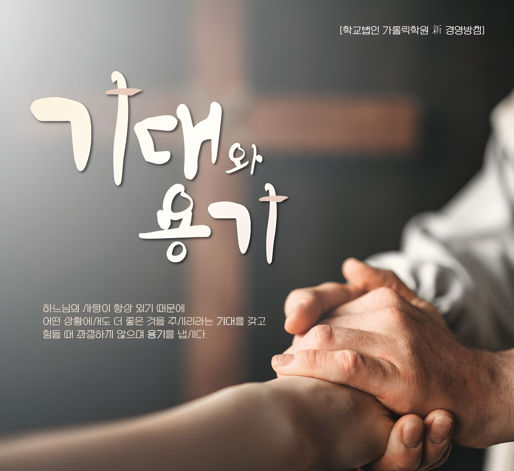

상황별 빠른 안내
전체 흐름도
케이스는 본인만 볼 수 있게 저장되고, 바뀐 내용은 이력으로 남습니다.
19세 이상 가족을 관계별로 입력하세요
실종선고, 행방불명 신고 후 1년 이상, 의식불명·치매 등으로 의사표명이 불가하다고 전문의가 진단·확인한 가족은 빼고 셉니다. 해외 거주·거동 불편 가족은 녹취·녹화로 참여할 수 있으니 포함해서 셉니다. 시행령 §10 안내서 Q8·Q9
부모는 일반양자의 친생부모를 포함해 최대 4명, 조부모는 최대 8명까지 넣을 수 있습니다.
가족관계도
용어에 점선이 있으면 마우스를 올리거나 눌러 뜻을 볼 수 있습니다: 직계존속 · 직계비속 · 촌수 · 방계혈족 · 배우자 · 사실혼 · 가족관계증명서 · 제적등본 · 양자 · 친양자 · 인척
준비할 서류
위에 입력한 가족 구성에 맞춰 바뀝니다. 법령은 "가족관계증명서 등 환자의 가족임을 증명할 수 있는 서류"로 확인하도록 정하고 있습니다. 시행규칙 별지 제11·12호 안내서 p.11·52
입양한 가족 · 양자와 친양자
| 일반양자 | 친양자 | |
|---|---|---|
| 근거 | 민법 제882조의2 | 민법 제908조의3 |
| 양부모와의 관계 | 입양된 때부터 친생자와 같은 지위 → 자녀·부모(1촌) | 부부의 혼인 중 출생자로 봄 → 자녀·부모(1촌) |
| 친생부모와의 관계 | 유지 → 친생부모도 직계존속, 가족 범위에 포함 | 종료 → 친생부모는 가족 아님 (배우자의 친생자를 단독 입양한 경우 그 배우자와는 유지) |
| 확인 서류 | 가족관계증명서에는 양부모가 부모로 나옵니다. 친생부모 관계는 입양관계증명서로 확인 | 가족관계증명서로 충분 (친양자입양관계증명서는 발급 제한, 보통 불필요) |
| 파양된 경우 | 입양으로 생긴 친족관계가 끝나 서로 가족이 아닙니다 (민법 제776조) | |
입양하지 않은 배우자의 자녀(계자녀), 며느리·사위, 계부모는 인척이라 가족 범위에 들어가지 않습니다. 입양한 가족도 19세 이상이어야 진술·합의에 참여합니다.
연명의료에 해당하는 시술
임종과정에 있는 환자에게 치료 효과 없이 임종과정 기간만 연장하는 시술 법 §2(4) · 시행령 §2
| 구분 | 시술 |
|---|---|
| 법률 | 심폐소생술, 혈액투석, 항암제 투여, 인공호흡기 착용 |
| 시행령 (2019.3.28~) | 체외생명유지술(ECLS), 수혈, 혈압상승제 투여, 그 밖에 담당의사가 유보·중단할 필요가 있다고 판단하는 시술 |
중단 불가 · 통증 완화를 위한 의료행위, 영양분·물·산소의 단순 공급은 유보·중단할 수 없습니다. 법 §19②
용어 풀이
용어 구분
| 용어 | 뜻 | 판단 |
|---|---|---|
| 말기환자 | 적극적 치료에도 근원적 회복 가능성이 없고 점차 악화되어 수개월 이내 사망이 예상되는 환자 | 담당의사 + 해당 분야 전문의 1명 진단 |
| 임종과정 | 회생 가능성이 없고, 치료에도 회복되지 않으며, 급속도로 악화되어 사망에 임박한 상태 | 담당의사 + 해당 분야 전문의 1명 판단 (호스피스전문기관에서 호스피스를 이용하는 말기환자는 담당의사 단독 가능) |
| 유보 / 중단 | 유보는 처음부터 시행하지 않는 것, 중단은 시행 중인 것을 멈추는 것 | 이행은 임종과정 판단 후에만 |
두 서류의 차이
| 연명의료계획서 | 사전연명의료의향서 | |
|---|---|---|
| 작성자 | 담당의사 (환자 요청) | 19세 이상 본인 |
| 대상 | 말기환자 또는 임종과정 환자 (질환 제한 없음) | 건강 상태와 무관 |
| 장소 | 의료기관윤리위원회 등록 의료기관 | 지정된 사전연명의료의향서 등록기관 (본인 방문) |
| 이행 시 확인 | 등록되어 있으면 환자의 의사로 봄 | 환자에게 직접 확인, 의사능력 없으면 담당의사 + 전문의 1명이 적법 작성 확인 |
| 미성년자 | 환자와 법정대리인에게 설명 | 작성 불가 (19세 이상) |
이행 후 할 일
- 담당의사는 결정이 확인되면 즉시 이행합니다. 이행을 거부하는 담당의사는 의료기관윤리위원회를 통해 교체합니다. 법 §19①③
- 이행서(별지 제13호)를 이행 후 7일 이내 정보처리시스템으로 통보합니다. 사망·전원·퇴원 시에는 즉시 작성·통보를 권고합니다. 법 §19⑤ 안내서 p.13·68
- 이행일은 판단과 의사 확인이 끝나 이행을 결정한 날입니다. 안내서 p.67
- 관련 기록은 이행 후 10년간 보존합니다. 기록을 허위로 작성하면 형사처벌 대상입니다. 법 §20 · §39
- 의료인이 과실로 기록을 허위 작성하면 보건복지부장관이 의료기관의 장에게 소속 의료인 교육(2시간 이상)을 명할 수 있고, 따르지 않으면 과태료가 부과됩니다. 틀린 기재를 발견하면 숨기지 말고 바로 고치세요. 법 §20의2 · §43 (2025.10.2 시행) · 시행규칙 §15의2 (2026.1.13 시행)
병원 내규 추가
병원별 내규를 조항 단위로 등록하면 지침·해석 탭과, 지정한 경로의 결과 화면에 함께 나옵니다.
표시할 경로